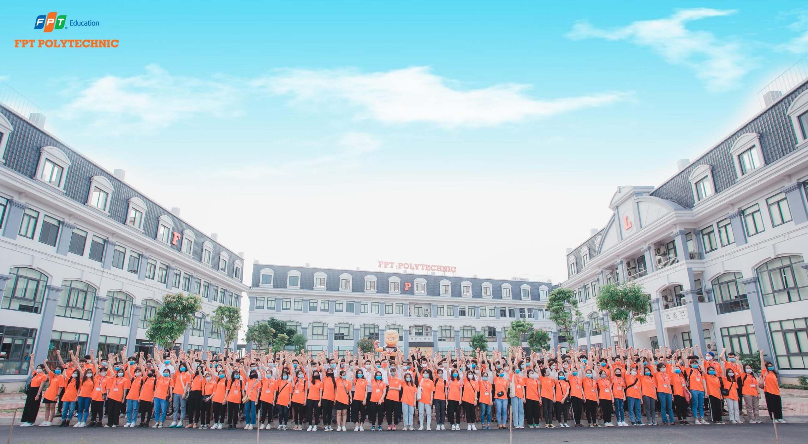

<div class="row">
    <div class="col-12">
        <div class="card mb-3">
            <div class="card-header bg-warning text-white pt-3">
                <h5><i class="bi bi-list-task p-2"></i>Giới thiệu</h5>
            </div>
            <div class="card-body">
                <div class="row">
                    <div class="col-12">
                        <h4 style="text-align: center;">Trường Cao đẳng FPT Polytechnic cơ sở Hà Nội
                        </h4>
                        <span style="text-align: right;">Cao đẳng FPT Polytechnic (FPT Polytechnic) là
                            trường đào tạo trong
                            lòng doanh nghiệp, xuất phát từ Tập đoàn FPT, đào tạo sinh viên với
                            triết lý "Thực học - Thực nghiệp.
                            FPT Polytechnic được thành lập vào tháng 7 năm 2010. Hiện tại, FPT
                            Polytechnic đang 7 cơ sở trên toàn quốc</span>
                    </div>
                    
                    <span class="col-12">
                        Cao đẳng thực hành FPT Polytechnic ra đời với sứ mệnh cung cấp dịch vụ đào tạo
                        tốt
                        trên các tiêu
                        chí: phù hợp với năng lực học tập của sinh viên; đáp ứng nhu cầu lớn của doanh
                        nghiệp; và cung cấp
                        dịch vụ đào tạo chuẩn mực dựa trên các chuẩn đã được công nhận. Với tỷ lệ 97,7%
                        sinh
                        viên có việc
                        làm ngay sau khi tốt nghiệp.
                    </span>
                </div>
            </div>
        </div>
    </div>
</div>